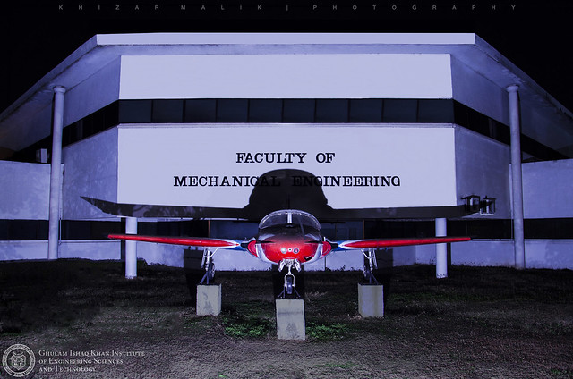

FCSE
Title: "GIKI's FCSC: Pioneering Excellence in Computer Science and Engineering Education" Introduction: At the heart of the academic landscape in our esteemed university, the Faculty of Computer Science and Engineering (FCSC) at GIKI (Ghulam Ishaq Khan Institute of Engineering Sciences and Technology) stands as a symbol of innovation and excellence. Let's explore why FCSC at GIKI is recognized as a powerhouse for grooming future leaders in the dynamic fields of computer science and engineering.
FCSC at GIKI: A Legacy of Excellence
FES(Faculty of Engineering Sciences)
Title: "FES at GIKI: Nurturing Ingenious Minds in Engineering Sciences" Introduction: The Faculty of Engineering Sciences (FES) at GIKI (Ghulam Ishaq Khan Institute of Engineering Sciences and Technology) is a cornerstone of academic excellence, where the principles of engineering converge with innovative teaching methodologies. Let's delve into why FES at GIKI is revered for fostering ingenious minds in the realm of engineering sciences.
Faculty of Materials & Chemical Engineering
Delve into the world of cutting-edge materials engineering at Ghulam Ishaq Khan Institute of Engineering Sciences and Technology (GIKI), where innovation meets academic excellence. This blog explores the unique facets of GIKI's Materials Engineering program, unraveling the key elements that make it a breeding ground for future innovators in material sciences.
Building Tomorrow: GIKI's Department of Civil Engineering"
Introduction: Embark on a journey of architectural marvels and infrastructural innovation with the Department of Civil Engineering at Ghulam Ishaq Khan Institute of Engineering Sciences and Technology (GIKI). This blog unravels the foundations of GIKI's Civil Engineering program, showcasing how it nurtures future engineers who shape the landscapes of tomorrow.
"Precision in Motion: GIKI's Mechanical Engineering Unveiled
Hostel life at GIKI is a vibrant canvas of shared experiences, late-night discussions, and a sense of camaraderie that fills the air. Within the comforting walls of shared rooms, laughter, debates, and friendly banter create an atmosphere of shared joy. These spaces become the backdrop for the forming of lifelong friendships, where stories of successes and challenges are etched into the very fabric of the hostel life. The interactions within the hostel are not just conversations; they are a vital part of the GIKI experience, offering support, connections, and memorable moments that turn ordinary days into extraordinary memories.
Brabers
Step into the world of strategic decision-making, business innovation, and leadership excellence with the School of Management Sciences at Ghulam Ishaq Khan Institute of Engineering Sciences and Technology (GIKI). This blog sheds light on the dynamic landscape of GIKI's School of Management Sciences, where future business leaders are groomed for success on the global stage.